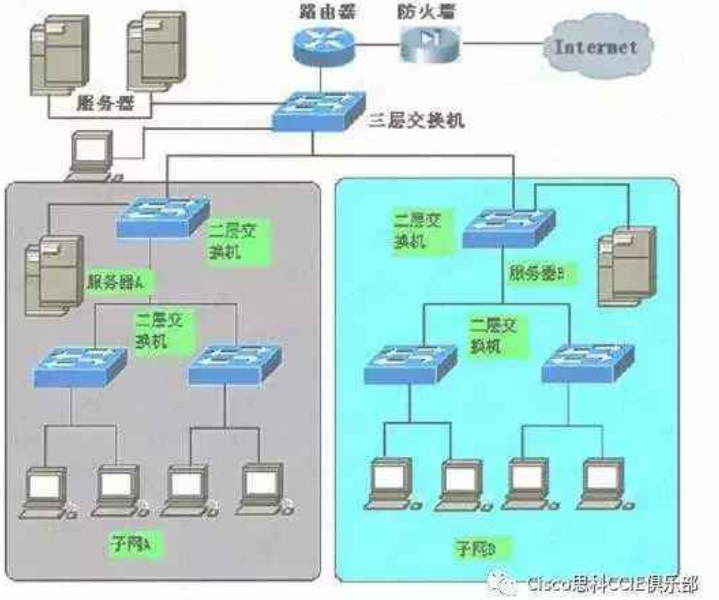

我们习惯说，在二层网络环境中相同VLAN（Virtual Local Area Network）之间可以通信，不同vlan之间不可以通信，如果想通信必须借助三层设备，所以说三层交换机必须要做的事情是路由转发，但是二、三层交换机具体有什么区别呢？
二层交换机
二层交换机工作于OSI模型的第2层(数据链路层)，故而称为二层交换机。二层交换技术发展比较成熟，二层交换机属数据链路层设备，可以识别数据包中的MAC地址信息，根据MAC地址进行转发，并将这些MAC地址与对应的端口记录在自己内部的一个地址表中。具体的工作流程如下：
当交换机从某个端口收到一个数据包，它先读取包头中的源MAC地址，这样它就知道源MAC地址的机器是连在哪个端口上的；
再去读取包头中的目的MAC地址，并在地址表中查找相应的端口；
如表中有与这目的MAC地址对应的端口，把数据包直接复制到这端口上；
如表中找不到相应的端口则把数据包广播到所有端口上，当目的机器对源机器回应时，交换机又可以学习一目的MAC地址与哪个端口对应，在下次传送数据时就不再需要对所有端口进行广播了。
不断的循环这个过程，对于全网的MAC地址信息都可以学习到，二层交换机就是这样建立和维护它自己的地址表。
二层交换技术从网桥发展到VLAN（虚拟局域网），在局域网建设和改造中得到了广泛的应用。第二层交换技术是工作在OSI七层网络模型中的第二层，即数据链路层。它按照所接收到数据包的目的MAC地址来进行转发，对于网络层或者高层协议来说是透明的。它不处理网络层的IP地址，不处理高层协议的诸如TCP、UDP的端口地址，它只需要数据包的物理地址即MAC地址，数据交换是靠硬件来实现的，其速度相当快，这是二层交换的一个显著的优点。但是，它不能处理不同IP子网之间的数据交换。传统的路由器可以处理大量的跨越IP子网的数据包，但是它的转发效率比二层低，因此要想利用二层转发效率高这一优点，又要处理三层IP数据包，三层交换技术就诞生了。
三层交换机
诞生
传统交换技术是在OSI网络标准模型第二层–数据链路层进行操作的，而三层交换技术是在网络模型中的第三层实现了数据包的高速转发，既可实现网络路由功能，又可根据不同网络状况做到最优网络性能。
二层交换技术从网桥发展到VLAN（虚拟局域网），在局域网建设和改造中得到了广泛的应用。第二层交换技术是工作在OSI七层网络模型中的第二层，即数据链路层。它按照所接收到数据包的目的MAC地址来进行转发，对于网络层或者高层协议来说是透明的。
它不处理网络层的IP地址，不处理高层协议的诸如TCP、UDP的端口地址，它只需要数据包的物理地址即MAC地址，数据交换是靠硬件来实现的，其速度相当快，这是二层交换的一个显著的优点。但是，它不能处理不同IP子网之间的数据交换。传统的路由器可以处理大量的跨越IP子网的数据包，但是它的转发效率比二层低，因此要想利用二层转发效率高这一优点，又要处理三层IP数据包，三层交换技术就诞生了。
原理
三层交换（也称多层交换技术，或IP交换技术）是相对于传统交换概念而提出的。众所周知，传统的交换技术是在OSI网络标准模型中的第二层——数据链路层进行操作的，而三层交换技术是在网络模型中的第三层实现了数据包的高速转发。三层交换机就是具有部分路由器功能的交换机，三层交换机的最重要目的是加快大型局域网内部的数据交换，所具有的路由功能也是为这目的服务的，能够做到一次路由，多次转发。对于数据包转发等规律性的过程由硬件高速实现，而像路由信息更新、路由表维护、路由计算、路由确定等功能，由软件实现。简单地说，三层交换技术就是：二层交换技术＋三层转发技术。
三层交换机就是具有部分路由器功能的交换机。
三层交换机的最重要目的是加快大型局域网内部的数据交换，所具有的路由功能也是为这目的服务的，能够做到一次路由，多次转发。对于数据包转发等规律性的过程由硬件高速实现，而像路由信息更新、路由表维护、路由计算、路由确定等功能，由软件实现。三层交换技术就是二层交换技术+三层转发技术。
三层交换技术的出现，解决了局域网中网段划分之后，网段中子网必须依赖路由器进行管理的局面，解决了传统路由器低速、复杂所造成的网络瓶颈问题。

交换机在判断出目的IP不是自己的时候是不是一定就去查看路由表呢 ？不是，这个就是交换机的关键所在了，交换机此时不会查看路由表，不会查看arp表，不会查看mac地址表；那交换机会查看什么表？
交换机此时会查看自己集成在ASIC硬件转发卡中的硬件转发表，那这个硬件转发表都包含了什么内容呢？
- 当第一个包过来的时候，发现硬件转发表并没有什么表项，所以此时必须将数据包交由路由进程处理，一旦交由cpu处理，必然会消耗cpu资源，此时会查看路由表，然后发现此IP地址和自己是直连的，此时就去查看arp找出此地址对应的mac地址，就可以转发出去了
- 在决定转发出去过程中，交换机至少会做三件事情，一，修改IP包头的ttl值；二，修改原mac地址，改成自己出接口mac地址；三，建立交换机硬件转发表，包括目的IP地址，目的IP地址（下一跳）对应的mac地址，mac地址对应的vlan，以及对应的端口（这个每个厂家有自己的理解）
- 这样当一下包过来的时候，交换机就会查看硬件转发表直接转发而不会在经过路由表的查询了，也即是交换机的一次路由，多次交换机原理。
具体操作
假设两个使用IP协议的站点A、B通过第三层交换机进行通信，发送站点A在开始发送时，把自己的IP地址与B站的IP地址比较，判断B站是否与自己在同一子网内。若目的站B与发送站A在同一子网内，则进行二层的转发。若两个站点不在同一子网内，如发送站A要与目的站B通信，发送站A要向“缺省网关”发出ARP(地址解析)封包，而“缺省网关”的IP地址其实是三层交换机的三层交换模块。
当发送站A对“缺省网关”的IP地址广播出一个ARP请求时，如果三层交换模块在以前的通信过程中已经知道B站的MAC地址，则向发送站A回复B的MAC地址。否则三层交换模块根据路由信息向B站广播一个ARP请求，B站得到此ARP请求后向三层交换模块回复其MAC地址，三层交换模块保存此地址并回复给发送站A,同时将B站的MAC地址发送到二层交换引擎的MAC地址表中。
从这以后，当A向B发送的数据包便全部交给二层交换处理，信息得以高速交换。由于仅仅在路由过程中才需要三层处理，绝大部分数据都通过二层交换转发，因此三层交换机的速度很快，接近二层交换机的速度，同时比相同路由器的价格低很多。
总结
简单点来说，二层和三层交换机最基本的区别就是，三层交换机具有路由功能，可以看作是网络层的设备（当然，也可以做二层用）。二层交换机是数据链路层的设备，不具备路由功能。
总之，二层交换机用于小型的局域网络。这个就不用多言了，在小型局域网中，广播包影响不大，二层交换机的快速交换功能、多个接入端口和低廉价格为小型网络用户提供了很完善的解决方案。
而三层交换机的最重要的功能是加快大型局域网络内部的数据的快速转发，加入路由功能也是为这个目的服务的。如果把大型网络按照部门，地域等等因素划分成一个个小局域网，这将导致大量的网际互访，单纯的使用二层交换机不能实现网际互访；如单纯的使用路由器，由于接口数量有限和路由转发速度慢，将限制网络的速度和网络规模，采用具有路由功能的快速转发的三层交换机就成为首选。
一般来说，在内网数据流量大，要求快速转发响应的网络中，如全部由三层交换机来做这个工作，会造成三层交换机负担过重，响应速度受影响，将网间的路由交由路由器去完成，充分发挥不同设备的优点，不失为一种好的组网策略，当然，前提是你的腰包很鼓，不然就退而求其次，让三层交换机也兼为网际互连。
传统交换技术是在OSI网络标准模型第二层–数据链路层进行操作的，而三层交换技术是在网络模型中的第三层实现了数据包的高速转发，既可实现网络路由功能，又可根据不同网络状况做到最优网络性能。
扩展资料
二层交换机和三层交换机都属于以太网交换机。
以太网交换机是基于以太网传输数据的交换机，以太网采用共享总线型传输媒体方式的局域网。以太网交换机的结构是每个端口都直接与主机相连，并且一般都工作在全双工方式。交换机能同时连通许多对端口，使每一对相互通信的主机都能像独占通信媒体那样，进行无冲突地传输数据。
以太网交换机应用最为普遍，价格也较便宜，档次齐全。因此，应用领域非常广泛，在大大小小的局域网都可以见到它们的踪影。